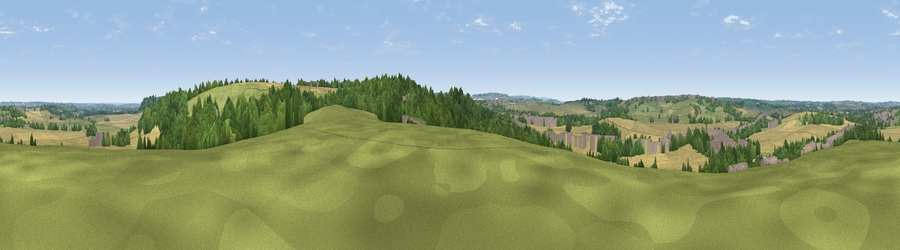

Viewpoint near Upper Sundon
#26889 in England · top 32% of its area beats it · near Upper SundonWhere it is
The exact computed spot (TL 03775 28575). Click the marker for map links.
The view, rendered

A 360° render of this exact spot computed from the terrain model, tree cover and land cover — summer colours, afternoon light, calibrated against photographs of famous viewpoints. Real trees, hedges and buildings will differ in detail.
The panorama
Grey silhouette: terrain skyline in each direction (720 bearings, Earth curvature and refraction included). Dashed green: skyline with trees (+15 m) and buildings (+8 m) as obstacles. Blue strip: how far the ground is visible on each bearing.
Where the view opens
Wedge length = distance to the farthest visible ground on that bearing (vegetation-aware). Rings at 10, 25 and 50 km.
What fills the view
39% cropland · 30% grassland · 24% woodland · 7% built-up
Angular shares of the visible panorama (visual magnitude), not map area. Landscape diversity 0.55 (0–1 Shannon).
Key numbers
More beautiful places nearby
The staircase of upgrades: each row has a higher view potential than everything closer. Driving times are estimates from straight-line distance, calibrated against real road routing — check an actual route before setting out.
| Place | Direction | Drive | Score |
|---|---|---|---|
| Viewpoint near Sharpenhoe | ENE · 3 km | ~8 min | 54.0 |
| Viewpoint near Hexton | E · 6 km | ~12 min | 64.2 |
| Viewpoint near Church End | SSW · 8 km | ~17 min | 65.4 |
| Beacon Hill | SW · 14 km | ~25 min | 74.1 |
| Viewpoint near Halton | SW · 24 km | ~39 min | 74.3 |
| Coombe Hill Monument | SW · 29 km | ~45 min | 75.5 |
| Viewpoint near Woolstone | WSW · 85 km | ~109 min | 76.7 |
| Viewpoint near Meon Vale | WNW · 88 km | ~112 min | 77.0 |
51.94600, -0.49159 · source: screening · position refined by local search. Computed location — check access rights before visiting.